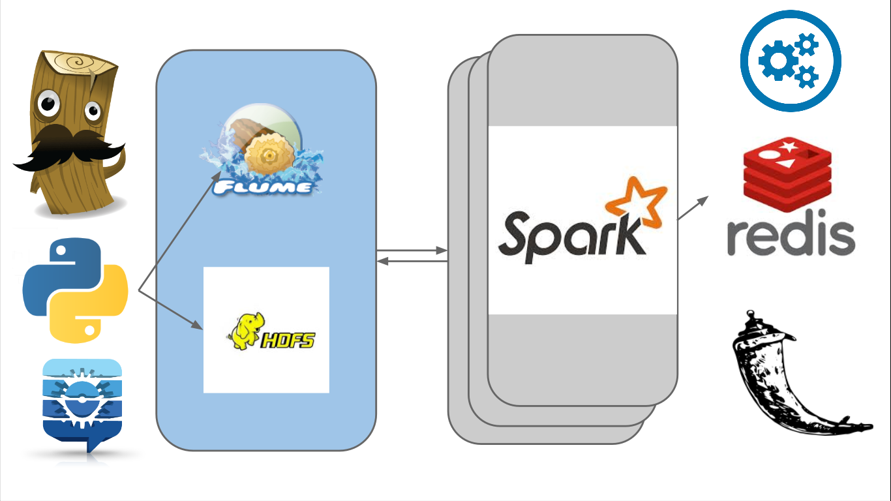
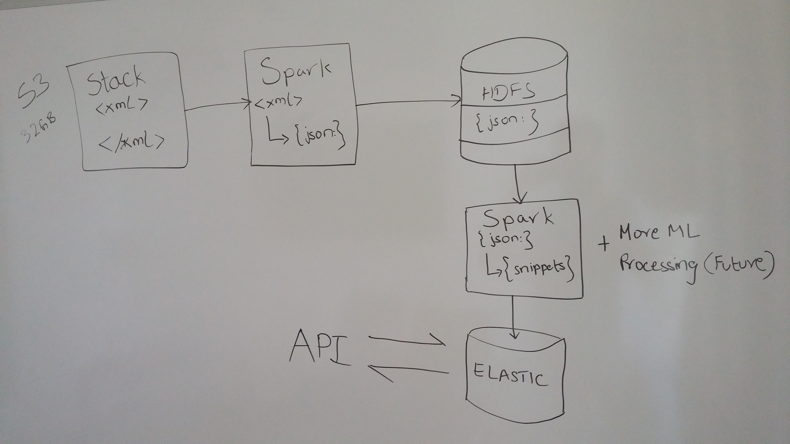

REBOT
Automate Debugging
Created by Naveen K Lekkalapudi / @nave91
Flow Chart

Done pipe

Should do

Text Parsing
|
|
|
Text Parsing
{
"body": "I want to use a track-bar to change a form's opacity.<\/p>\n\n
This is my code:<\/p>\n\n
decimal trans = trackBar1.Value \/ 5000;\nthis.Opacity = trans;\n<\/code><\/pre>\n\nWhen I try to build it, I get this error:<\/p>\n\n
\n Cannot implicitly convert type 'decimal' to 'double'.<\/p>\n<\/blockquote>\n\n
I tried making trans<\/code> a double<\/code>, but then the control doesn't work. This code has worked fine for me in VB.NET in the past. <\/p>\n",
"score": "322",
"posttypeid": "1",
"answer": "7",
"id": "4",
"snippets": "decimal trans = trackBar1.Value \/ 5000;\nthis.Opacity = trans;\n<\/code>trans<\/code>double<\/code>"
}
Output
GET /test-morn/_search?q=body:missing
Output
{
"took": 2,
"timed_out": false,
"_shards": {
"total": 5,
"successful": 5,
"failed": 0
},
"hits": {
"total": 1,
"max_score": 0.10980196,
"hits": [
{
"_index": "test-morn",
"_score": 0.10980196,
"_source": {
"id": "6",
"snippets": "divdivdiv0CSS",
"answer": "31",
"posttypeid": "1",
"score": "140",
"body": "I have an absolutely positioned div containing several children, one of which is a relatively positioned div"}}]
}
}
About me
- MS,CS, WVU.
- Research in Adv Data mining with JPL, NASA.
- SE at startup.
- Comp Security.